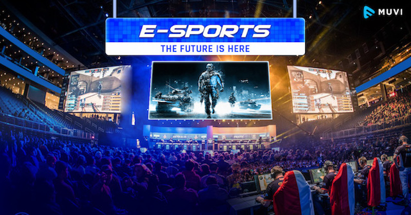

 
Esports (also known as electronic sports, e-sports, or eSports) is a form of sport competition using video games.Esports often takes the form of organized, multiplayer video game competitions, particularly between professional players, individually or as teams. Although organized competitions have long been a part of video game culture, these were largely between amateurs until the late 2000s, when participation by professional gamers and spectatorship in these events through live streaming saw a large surge in popularity.By the 2010s, esports was a significant factor in the video game industry, with many game developers actively designing and providing funding for tournaments and other events.Viewership of esports in India doubled to 17 million in 2020 while prize money pool grew 25-30%, according to industry estimates. Bengaluru: Inspired by the rapid pace of growth in the Indian esports sector, Animesh Agarwal, an esports professional, decided to move from just playing games to becoming an entrepreneur.